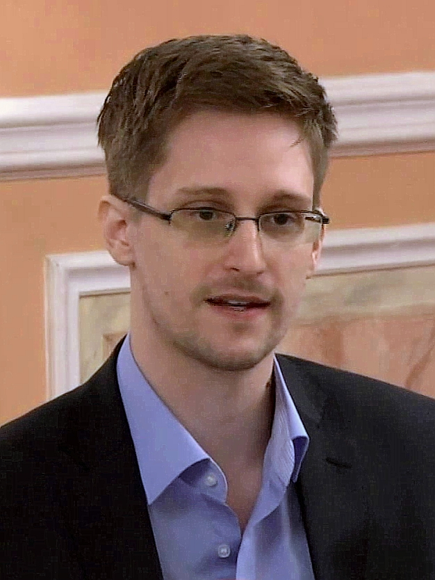

Throughout history, there have been cyberattacks so monumental they have shifted the perspective of the world on cybersecurity. Here are some of the most infamous hacks of all time.
Stuxnet was a complex computer worm believed to have been created by the United States and Israel. It was intended to sabotage Iran's nuclear program by physically destroying centrifuges used to enrich uranium. Stuxnet was the first known cyberattack to cause physical destruction, and so shifted the concept of warfare forever.
In April 2011, hackers infiltrated Sony's PlayStation Network, stealing personal data from over 77 million users. This included names, addresses, and credit card details, solidifying this event as one of the largest data breaches in history. Sony was forced to shut down the network for 23 days.
Edward Snowden, a former NSA contractor, leaked thousands of classified documents revealing to the public that the United States government was conducting mass surveillance on its own citizens as well as foreign world leaders. These leaks sparked a long ensuing debate worldwide about privacy and government power. Snowden has lived in exile in Russia ever since.
Edward Snowden

Source:
Wikipedia / Edward Snowden
Kevin Mitnick
Source:
Fortune Magazine / Getty Images
In 2015, a hacking group known as The Impact Team hacked into Ashley Madison, a dating website for people looking to have affairs. Their leak of 32 million members' personal data destroyed countless relationships, led to divorces, and was linked to multiple suicides.
The WannaCry ransomware was a global attack that infected over 200,000 computers across 150 countries in a single day. The ransomware encrypted the the victims' files and demanded Bitcoin payments to release them. The UK's National Health Service was severely impacted, leading to hospital appointments being cancelled and patients being turned away. This attack was linked to North Korean hackers.
Kevin Mitnick was once the most wanted computer criminal in the United States. Throughout the 1980s and 1990s he hacked into the computer systems of some of the world's largest companies at the time, including Nokia, Motorola, and Pacific Bell, stealing software and other sensitive data from these corporations. The FBI pursued him for years before finally arresting him in 1995. He served five years in prison, with eight months in solitary confinement for his alleged ability to launch nuclear missiles by simply whistling into a payphone. After his release from prison, Mitnick became a celebrated cybersecurity consultant and author until he passed away in 2023.